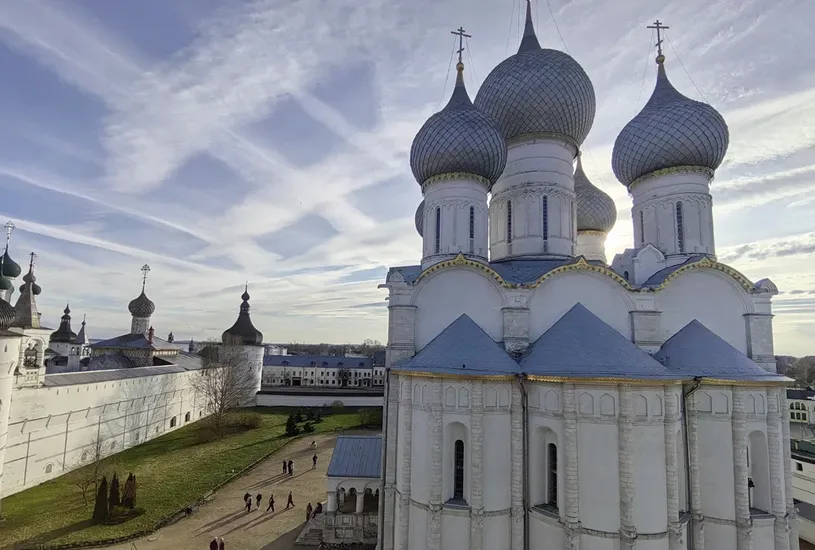
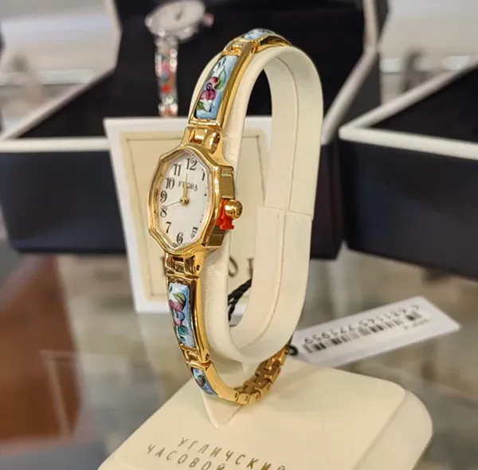
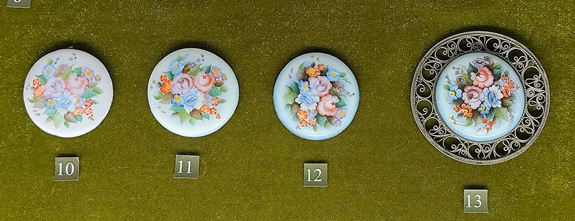
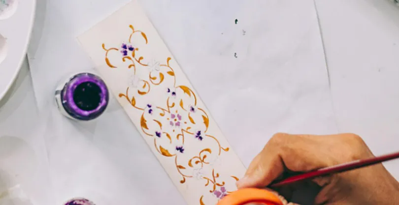

Наша историяО нас
«Ростовская эмаль» — мастерская ростовской финифти в Ростове Великом. Мы создаём украшения, иконы, нательные образки, броши, шкатулки и сувениры с миниатюрной живописью по эмали — так, как это делают ростовские мастера с XVIII века.
Наша миссия — вернуть один из древнейших промыслов России в обиход современного человека и показать, что финифть может храниться не только «на полке у бабушки», но и быть красивым интерьерным и повседневным украшением, которое выделит вас из толпы.
Ассортимент
В ассортименте «Ростовской эмали» — классические мотивы (иконопись, цветочные орнаменты, пейзажи Ростова) и современные дизайны. Роспись по эмали не выцветает со временем, а каждое изделие сопровождается сертификатом подлинности с подписью мастера.
Мы сохраняем традиции ростовских иконописцев и обучаем новых мастеров. Производство организовано совместно с ростовскими мастерами письма по эмали. Доставляем по России через интернет-магазин и партнёров. По оптовым поставкам и индивидуальным заказам обращайтесь по контактам, указанным на странице «Контакты».
Что такое финифть
Ростовская финифть — русский народный художественный промысел из Ростова Великого, где создают миниатюрную живопись на эмали.
Обычно это украшения и сувениры: броши, серьги, колье, иконы, шкатулки с тонкой росписью.
Промысел сложился в XVIII веке. Его основа — роспись эмалевыми красками по белой эмали, которой покрыта металлическая пластина.
Главная особенность финифти — яркие и очень тонкие изображения, которые мастер расписывает вручную и закрепляет обжигом, поэтому краски не выцветают со временем.

Технология изготовления
Ростовская финифть сочетает работу ювелира и живописца. Изделие проходит несколько этапов, и на каждом из них важна рука мастера.
1. Подготовка основы. Из тонкого листа меди вырезают и выколачивают слегка выпуклую пластину нужной формы. Её очищают и обезжиривают, чтобы эмаль легла ровно.
2. Эмалирование. Пластину покрывают белой эмалью — стекловидным порошком, разведённым водой, — и обжигают в муфельной печи. Слоёв белой эмали обычно несколько, каждый закрепляют отдельным обжигом. Так получается гладкий белый «холст» для росписи.


3. Роспись. Мастер переносит рисунок — цветы, птиц, пейзажи или иконописные образы — и расписывает его тонкими кистями огнеупорными эмалевыми красками. Краски готовят из окислов металлов, растирают и смешивают со связующим маслом.
4. Обжиг. Роспись выполняют в несколько приёмов: после каждого слоя изделие снова обжигают, и краски вплавляются в эмаль. Так достигается глубина цвета и тонкие переходы оттенков.
5. Сборка. Готовую миниатюру вставляют в оправу — часто с ажурной филигранью — и добавляют застёжку, цепочку или раму.
Роспись, вплавленная в эмаль, не тускнеет от света и времени. Но эмаль — это стекло: она может сколоться от удара, поэтому изделие стоит беречь от падений.
Онлайн мастер-классы
Онлайн мастер-классы по росписи эмали проходят раз в полгода в групповом формате. Запишитесь на ближайшую дату и укажите уровень подготовки — подберём программу.
Мы пришлём набор для росписи: готовую эмалевую заготовку, краски, кисти и инструкцию. На трансляции вы распишете заготовку вместе с мастером. Обжиг требует муфельной печи, поэтому расписанную заготовку вы отправляете нам — мы обожжём её в мастерской, оформим в изделие и вернём вместе с именным сертификатом.
Подходит для начинающих и тех, кто живёт далеко от Ростова. Перед записью можно бесплатно проконсультироваться с мастером. Видео о работе мастерской — на нашем канале на Rutube.
Записаться на мастер-класс